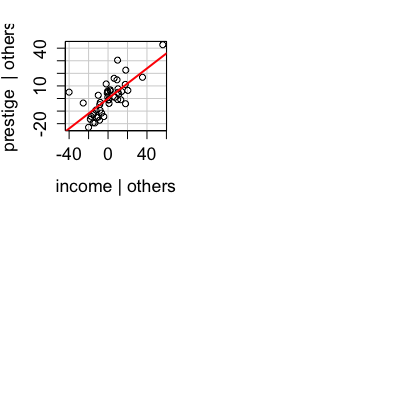
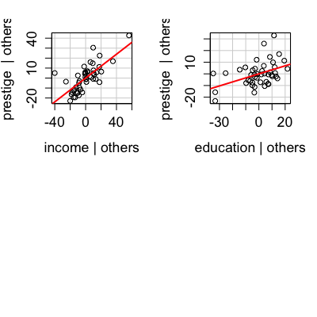
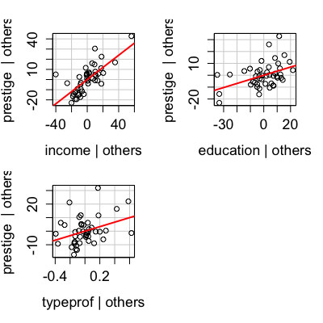
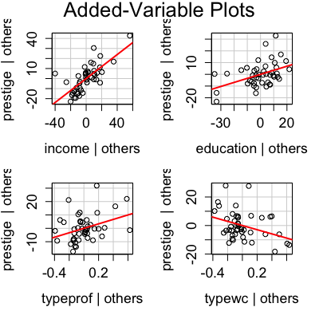
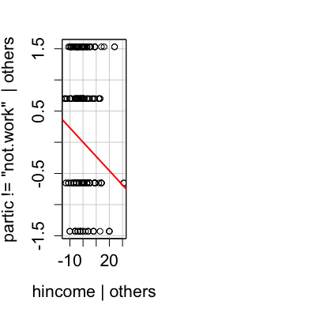

Usage
avPlots(model, terms = ~., intercept = FALSE, layout = NULL, ask, main, ...) avp(...) avPlot(model, ...) avPlot(model, variable, id.method = list(abs(residuals(model, type = "pearson")), "x"), labels, id.n = if (id.method[1] == "identify") Inf else 0, id.cex = 1, id.col = palette()[1], col = palette()[1], col.lines = palette()[2], xlab, ylab, pch = 1, lwd = 2, main = paste("Added-Variable Plot:", variable), grid = TRUE, ellipse = FALSE, ellipse.args = NULL, ...) avPlot(model, variable, id.method = list(abs(residuals(model, type = "pearson")), "x"), labels, id.n = if (id.method[1] == "identify") Inf else 0, id.cex = 1, id.col = palette()[1], col = palette()[1], col.lines = palette()[2], xlab, ylab, pch = 1, lwd = 2, type = c("Wang", "Weisberg"), main = paste("Added-Variable Plot:", variable), grid = TRUE, ellipse = FALSE, ellipse.args = NULL, ...)
Arguments
- model
- model object produced by
lmorglm. - terms
- A one-sided formula that specifies a subset of the predictors.
One added-variable plot is drawn for each term. For example, the
specification
terms = ~.-X3would plot against all terms except forX3. If this argument is a quoted name of one of the terms, the added-variable plot is drawn for that term only. - intercept
- Include the intercept in the plots; default is
FALSE. - variable
- A quoted string giving the name of a regressor in the model matrix for the horizontal axis
- layout
-
If set to a value like
c(1, 1)orc(4, 3), the layout of the graph will have this many rows and columns. If not set, the program will select an appropriate layout. If the number of graphs exceed nine, you must select the layout yourself, or you will get a maximum of nine per page. Iflayout=NA, the function does not set the layout and the user can use theparfunction to control the layout, for example to have plots from two models in the same graphics window. - main
- The title of the plot; if missing, one will be supplied.
- ask
- If
TRUE, ask the user before drawing the next plot; ifFALSEdon't ask. - ...
avPlotspasses these arguments toavPlot.avPlotpasses them toplot.- id.method,labels,id.n,id.cex,id.col
- Arguments for the labelling of
points. The default is
id.n=0for labeling no points. SeeshowLabelsfor details of these arguments. - col
- color for points; the default is the second entry
in the current color palette (see
paletteandpar). - col.lines
- color for the fitted line.
- pch
- plotting character for points; default is
1(a circle, seepar). - lwd
- line width; default is
2(seepar). - xlab
- x-axis label. If omitted a label will be constructed.
- ylab
- y-axis label. If omitted a label will be constructed.
- type
- if
"Wang"use the method of Wang (1985); if"Weisberg"use the method in the Arc software associated with Cook and Weisberg (1999). - grid
- If
TRUE, the default, a light-gray background grid is put on the graph. - ellipse
- If
TRUE, plot a concentration ellipse; default isFALSE. - ellipse.args
- Arguments to pass to the
link{dataEllipse}function, in the form of a list with named elements; e.g.,ellipse.args=list(robust=TRUE))will cause the ellipse to be plotted using a robust covariance-matrix.
Description
These functions construct added-variable (also called partial-regression) plots for linear and generalized linear models.
Details
The function intended for direct use is avPlots (for which avp
is an abbreviation).
Value
These functions are used for their side effect id producing plots, but also invisibly return the coordinates of the plotted points.
References
Cook, R. D. and Weisberg, S. (1999) Applied Regression, Including Computing and Graphics. Wiley.
Fox, J. (2008) Applied Regression Analysis and Generalized Linear Models, Second Edition. Sage.
Fox, J. and Weisberg, S. (2011) An R Companion to Applied Regression, Second Edition, Sage.
Wang, P C. (1985) Adding a variable in generalized linear models. Technometrics 27, 273--276.
Weisberg, S. (2005) Applied Linear Regression, Third Edition, Wiley.
Examples






See also
residualPlots, crPlots, ceresPlots, link{dataEllipse}